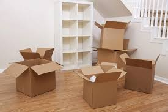

Usluge
Spektar usluga agencije Selidbe NO 1 je širok u pogledu preseljenja, selidbi i prevoza stvari.
Tako da nam se možete obratiti ukoliko vam treba i selidba i prevoz samo jedne stvari, ali i demontaža i
montaža nameštaja
kojeg ste poručili iz nekog salona nameštaja.
Godine iskustva u montaži nameštaja, na mnogim selidbama u Beogradu ali na prostoru cele Srbije i
regiona,
učinile su da se skoro sa svakom montažom i demontažom nameštaja iz lokalnih salona nameštaja nosimo sa
lakoćom.
Naravno nismo stolari, i određene komade nameštaja mogu slopiti i rasklopiti samo stolari.

Selidbe stanova
Prilikom selidbe stana važno je obratiti pažnju na više aspekata koji karakterišu
selidbu,
njenu kompleksnost i zahtevnost, a to su sam položaj zgrade ili objekta, odnosno da li sama zgrada ima
dobar pristup za naše vozilo
, tj da li se objektu može prići do te mere da se radnicima olakša utovar i istovar stvari, koji u
mnogome i diktira cenu same selidbe.
Takođe sam geografski položaj objekta može predstavljati problem za selidbu, jer u određenim delovima
grada, nije dozvoljeno
parkiranje vozila duže od 2-3 časa, ili je u potupnosti onemogućeno. Ovaj detalj jako je bitan kada se
planira selidba
na teritoriji centralnih gradskih opština grada Beograda.
Zatim tu je bitan faktor i spratnost i dostupnost lifta kao i njegove dimenzije u odnosnu na dimenzije
stvari i nameštaja koje se sele.
Određeni komadi nameštaja se moraju demontirati pre selidbe i po svojim fizičkim karakteristikama ne mogu
se seliti i tzransportovati u celini,
a to opet zahteva dosta više više vremena za ceo proces selidbe.
Ovi i mnogi drugi aspekti čine posao selidbe više nego komleksnim logističkim izazovom sa kojima se naša
agencija susreće svaki dan,
ali ne brinite, na pravom ste mestu.
Selidbe firmi
Prilikom selidbe firmi, lokala, preduzeća, kancelarijskog i drugog radnog prostora, najzahtevniji aspekat jeste količina
stvari i nameštaja koji se sele, i lokacija na kojoj se objekat nalazi. U mnogim slučajevima, naši radnici se susreću sa
komadima namštaja koji su poravljeni po meri za određenu firmu, prostoriju i objekat, što čersto komplikuje sam proces selidbe
i preseljenja, u smislu da neki od tih komada nameštaja nije moguće u opšte rasklopiti ili bi se njegovim rasklapanjem dovela u
pitanje njegova dalja funkcionalnost. Zato je prilikom selidbe firmi neophodno da neko od naših radnika ili stručnih lica
dođe kod vas na adresu i proceni kakvi su uslovi za realizaciju selidbe, koliko je radne snage potrebno, zaštitnog materijala
i vremana za demontažu, utovar i realizaciju kompletne selidbe.
Selidbe izvan grada Beograda
Agencija za selidbe SELIDBE NO 1 se bavi preseljenjem, kako u Beogradu, tako i izvan granica grada Beograda, tačnije na
teritoriji cele Srbije. i regiona. Prilikom selidbe izvan grada Beograda računa se ukupna distanca između tačke utovara i
tačke istovara, što u ovom slučaju u velikoj meri, pored ostalih gore navedenih faktora, određuje i cenu same selidbe.
Ali ne brinite, cene prevoza i selidbe izvan grada se računaju na jednostavan način, po pređenom kilometru i utrošku vremana
tako da na odeljku CENE možete proveriti koliko se tarifira prevoz izvan grada.
Pakovanje stvari
U koliko imate previše obaveza, i ne želite da se zamarate sa pakovanjem vaših stvari u kutije ili dzambo vreće, slaganjem
i zaštitom posuđa ili escajga, zaštitom malih kućnih aparata, tu smo za vas. Naši momci će po vašoj želji doći dan-dva ranije i obaviti
svo pakovanje za vas i pripremiti sve da sav vaš escajg i dragocenosti budu preseljeni na drugu lokaciju dok trepnete, brzo i sigurno,
dok vi vaše dragoceno vreme možete posvetiti deci, poslu i drugim obavezama.
Najam radnika
Ponekad za selidbu nije potreban prevoz ni kombijem ni kamionom već samo iskusna i pažljiva radna snaga, iskusnog tima za selidbe kako bi
se vaše stvari preselile sa jedne na drugu lokaciju. U mnogim slučajevima naš tim je angažovan da preslei stvari iz jednog stana u drugi na
istoj lokaciji. Nemojte misliti da je ovakav tip selidbe išta manje zahtevan od gore navedenih, jer i u ovom slučaju mora se obratiti
pažnja na bezbednost i zaštitu nameštaja i dragocenosti kao da se transportuju vozilom, jer prilikom manevrisanja kroz zgrade i objekte
vrlo lako se može oštetiti svaki komad nameštaja, u koliko sa njim barata neiskusan radnik. Zato se nama možete obratiti u svako doba
za najam najiskusnij radnika iz ove branše, jer ipak ovi momci nisu samo fizikalci i nemojte ih podcenjivati, oni su profesionalci u svom poslu
i prema vašim stvarima se odnose kao prema svojoj ličnoj imovini.
Selidbe bez radnika
Ukoliko vam finansijsko stanje ne dozvoljava da za selidbu angažujete naš tim radnika, ili nemate mnogo stvari i spratnost nije velika,
možete angažovati naše čisto i bezbedno vozilo da vam preveze nameštaj i stvari sa jedne na drugu lokaciju.
ONLINE procena
Zauzeti ste na poslu ili drugim obavezama? Nemate vremana za satanak sa našim stručnjakom ili radnikom radi procene same selidbe?
Nikakav problem! Naša agencija pružiće vam besplatnu procenu na osnovu slika i video snimaka koje nam dostavite na Viber, WhatsUp ili Instagram.